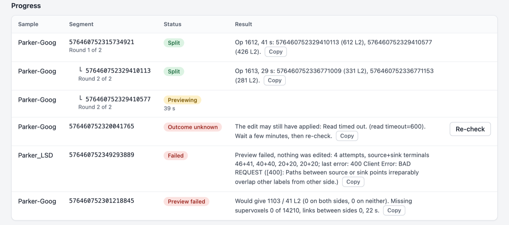

How to use the segment splitter
Proofread CAVE segmentations by cutting large false merges (Length-Based Auto Split), running bidirectional proofreading and skeleton export between CATMAID and CAVE (CATMAID-Driven Split & Merge), and auditing every edit in the Change Register.
1. Open the app
The app runs on the lab's GPU server (or locally on your workstation). Whoever starts it gets a link that looks like this:
http://127.0.0.1:8765/?token=y8F6Vic…To open it from your own computer when it runs on a remote server, first connect with an SSH tunnel, then open the link in your browser:
ssh -N -L 8765:127.0.0.1:8765 <server>- The token in the link is a password. Anyone with the link can make edits with the server's CAVE and CATMAID accounts, so don't share it or paste it in chat.
- The link changes every time the app restarts. If the page says "Missing or wrong token", copy the new link printed in the terminal.
- Switch between Length-Based Auto Split, CATMAID-Driven Split & Merge, and Change Register (CAVE & CATMAID) using the three tabs below the page title.
- Click How to use at the top right of the app at any time to open this guide.
2. Tab 1: Split a segment (Length-Based Auto Split)

- Sample: choose the dataset the segment belongs to.
- Segment: paste one segment (root) ID, for example from Neuroglancer. Only digits are accepted.
- Rounds: leave it at
1to cut the segment into two pieces. See rounds to cut further. - Preview first: leave it ticked. The app then checks the cut with a read-only preview and only makes the edit if the preview passes. You won't be asked to confirm.
- Click Start. The job appears under Progress.
3. Tab 1: Cut into more pieces with rounds
Each cut gives two large pieces. With more than one round, the app keeps going and cuts each of those pieces again:
| Rounds | What happens | Edits at most | Large pieces |
|---|---|---|---|
| 1 | A → B + C | 1 | 2 |
| 2 | then B → B0 + B1 and C → C0 + C1 | 3 | 4 |
| 3 | then each of those again | 7 | 8 |
The hint under the form shows these numbers before you start. The maximum is 6 rounds. Every cut in the tree gets its own preview, and a branch stops on its own if its preview fails or a piece is too small (under 10 L2 nodes). The other branches carry on.
4. Tab 1: Follow the progress

The newest jobs are at the top, and pieces from later rounds are nested under the segment they came from. The page updates itself every few seconds.
| Status | Meaning | Was anything edited? |
|---|---|---|
| Queued Previewing | Waiting, or checking the cut. Up to 4 jobs run at once. | No |
| Splitting | The edit is being made. It takes from about 15 s for small segments to about 3 min for very large ones. | In progress |
| Split | Done. The result lists the operation number (Op) and the new segment IDs, largest first, with their sizes in L2 nodes. | Yes |
| Preview failed | The preview found that the cut wouldn't be good enough, so it wasn't made. The result shows what the cut would have given. | No |
| Failed | Something went wrong before the edit. The result says what. | No |
| Split, sides not separated | The edit was made, but the two sides are still connected. | Yes |
| Outcome unknown | The request failed, but the edit may still have applied. See below. | Maybe |
Every result has a Copy button. It copies the sample, segment, status and full message, including the complete server error if there was one. Use it when you report a problem.
5. Tab 2: CATMAID-Driven Split & Merge — First-time setup
Use the CATMAID-Driven Split & Merge tab to compare traced CATMAID skeletons against CAVE segmentations, split false merges where one CAVE segment overlaps multiple CATMAID skeletons, merge false splits where one CATMAID skeleton spans multiple CAVE segments, and export proofread CAVE segments back into CATMAID.
Your CAVE login is read automatically from your saved local CAVE secret (CAVEclient().auth), and sample names/datastacks are inherited from config.json. The first time you work with a sample (for example, Parker-Goog or Parker_LSD):
- Select the sample in Sample / Project Profile. The setup panel opens automatically if the project has not been saved yet.
- Enter your base CATMAID Server URL (without
?pid=...), numeric CATMAID Project ID, and your 40-character CATMAID API Token (in CATMAID: click your username top-right → API token). - If your CATMAID server displays a browser login popup before the page loads (front-door HTTP Basic Auth), also enter your HTTP User and HTTP Password. Otherwise leave both blank.
- Click 1. Verify Connection & Query. The app authenticates with both servers and detects the CAVE segmentation resolution (e.g.,
16,16,16nm) and available CATMAID stacks. - Confirm or enter the CATMAID Resolution (x,y,z nm) (e.g.,
8,8,16) and coordinate unit (nmfor standard CATMAID projects), then click 2. Save Project Profile.
.cave_catmaid_config.json. On all subsequent runs, selecting that sample loads everything automatically.6. Tab 2: Preview and execute a CATMAID batch (CATMAID → CAVE)
- Load Skeletons: choose CATMAID Annotation (for example, an annotation covering a batch of neurons) or enter comma-separated Skeleton IDs.
- Min Nodes / Side: rows where either side has fewer internal nodes than this threshold (default
3) are left unchecked in the approval tables so minor boundary jitter does not trigger unwanted edits. - Click Download & Build Dry-Run Plan. The app downloads skeletons locally as SWC files (cached under
data/catmaid_skeletons/<project>/), strips out end (leaf) nodes while keeping all remaining manually placed nodes, and maps coordinates to live CAVE root IDs. Tick Re-download SWCs if skeletons were updated in CATMAID. - Review the triage plan:
- Clean 1-to-1: skeletons that already match a single CAVE segment with no overlaps from other skeletons.
- Planned Splits: CAVE root IDs overlapped by two or more CATMAID skeletons. Uncheck any row you want to skip.
- Planned Merges: CATMAID skeletons spanning two or more CAVE root IDs. Uncheck any row you want to skip.
- Inspect a cut in 3D: click Preview 3D on any row in Planned Splits to run a read-only CAVE
preview_splitand open a Neuroglancer link showing source nodes in green and sink nodes in red. - Click Execute Approved Splits & Merges in CAVE. The app executes all checked splits first, refreshes live CAVE root IDs, and then executes all checked merges using the closest pair of internal skeleton nodes between fragments.
7. Tab 2: Export CAVE skeletons to CATMAID (CAVE → CATMAID)
In Section 2. CAVE → CATMAID, you can skeletonize proofread CAVE segments using multi-CPU Kimimaro TEASAR + navis (heal → smooth → resample) and upload missing branches directly into CATMAID without duplicating existing manual tracings:
- CAVE Root IDs: paste one or more proofread CAVE segment IDs (comma, space, or newline separated).
- Neuron / Batch Name & Target CATMAID Annotations: enter a base neuron name (e.g.,
KC) and comma-separated CATMAID annotations (e.g.,KC, KC1, RIGHT). CATMAID's Neuron Name Service automatically renders annotations alongside the neuron name. - Kimimaro MIP, Parallel CPUs & Resample (nm): choose the downsampling level (
3for finer branches,4for faster whole-cell runs), number of parallel CPU workers (default4), and target spacing (default128 nm). - Cut Buffer (nm) & Z-Slice Step: any skeleton node within Cut Buffer (default
400 nm) of an existing CATMAID skeleton in that local neighborhood is cut away so manual backbones and synapses are never overwritten. Z-Slice Step (default4) thins smooth unbranched tracts while keeping all branch points and tips. - Click Build Export Dry-Run Plan to inspect match types (0-Match (New), 1-to-1 Match, or 1-to-Many), node counts, and editable fragment names.
- Click Export Approved Skeletons to CATMAID. With Auto-stitch into Master ticked, new branches join directly onto your paired CATMAID skeleton.
8. Tab 3: Change Register (CAVE & CATMAID)
The Change Register (CAVE & CATMAID) tab records every real edit applied across both databases so the lab has a single place to see where (CAVE or CATMAID) and what changed:
- CAVE entries: logs every Auto Split, CATMAID-Driven Split, and CATMAID-Driven Merge with the project, datastack, before/after root IDs, and chunkedgraph Op ID.
- CATMAID entries: logs every Skeleton Export & Stitch with the source CAVE root ID, resulting CATMAID skeleton ID(s), fragment names, added node count, and applied annotations.
- Filtering & export: filter by system (All, CAVE Only, or CATMAID Only) or search by root ID, skeleton ID, Op ID, or annotation. Click Download CSV at any time; the register is also saved automatically on disk at
outputs/change_register.csvandoutputs/change_register.json.
9. Deployment & configuration examples
Use these examples when setting up the app on a new workstation or lab server.
Example A: Fresh installation & CAVE authentication
git clone <repo-url>
cd <repo-folder>
python3 -m venv .venv
source .venv/bin/activate
pip install -r requirements.txtSave your personal CAVE token once so caveclient can authenticate automatically:
python -c "from caveclient import CAVEclient; c = CAVEclient(server_address='https://global.connectomics.braininbrain.org'); c.auth.save_token(token='YOUR_CAVE_TOKEN', overwrite=True)"Example B: Configuring datasets in config.json
Create or edit config.json in the repository root to map human-friendly sample names to their CAVE datastack names:
{
"server_address": "https://global.connectomics.braininbrain.org",
"samples": {
"Parker-Goog": "zlatic_parker_goog_datastack",
"Parker_LSD": "zlatic_parker_lsd_datastack"
}
}Verify the installation and web routes offline (no CAVE edits are made) using the built-in self-test:
python app.py --selftestExample C: Deploying on a multi-core lab server & connecting over SSH
Running the server on a multi-core machine speeds up Kimimaro skeletonization and CloudVolume chunk downloads while keeping the port bound strictly to 127.0.0.1:
# 1. On the lab server (in tmux/screen or background):
nohup python app.py --host 127.0.0.1 --port 8765 > server.log 2>&1 &
head -n 5 server.log # copy the http://127.0.0.1:8765/?token=... link
# 2. On your laptop, forward port 8765 over SSH:
ssh -N -L 8765:127.0.0.1:8765 <your_user>@<lab-server>Open the copied http://127.0.0.1:8765/?token=... URL in your local browser.
Example D: End-to-end CATMAID ↔ CAVE workflow
- Configure project once: in Tab 2, select
Parker-Goog, enter your CATMAID URL (e.g.,https://neurophyla.mrc-lmb.cam.ac.uk/catmaid/fibsem), project ID, API token (and HTTP Basic Auth user/password if prompted by the server), click 1. Verify Connection & Query, and click 2. Save Project Profile. - Fix CAVE segmentation errors from CATMAID: enter a CATMAID annotation in Section 1, click Download & Build Dry-Run Plan, inspect splits in Neuroglancer via Preview 3D, and click Execute Approved Splits & Merges in CAVE.
- Push completed CAVE branches back to CATMAID: paste the resulting CAVE root ID(s) into Section 2, set Target CATMAID Annotations (e.g.,
KC, RIGHT), click Build Export Dry-Run Plan, and click Export Approved Skeletons to CATMAID. - Verify the audit trail: open Tab 3 (Change Register) or download
outputs/change_register.csvto review all CAVE Op IDs and newly created/stitched CATMAID skeleton IDs.
10. When something goes wrong
Preview failed (Tab 1)
Nothing was edited. A preview passes only if the cut is valid, cleanly separates the two sides, misses at most 1% of supervoxels, and the smaller piece has at least 10% of the segment. In the example above, "Would give 1103 / 41 L2" failed because 41 is under 10% of the total: the cut would only have shaved off a small piece. Such segments may need splitting by hand.
Failed
Nothing was edited. The message explains why: for example, the segment is too small (under 10 L2 nodes), or it is no longer the latest version because someone else edited it. In that case, paste in the newest ID. If it mentions an invalid or expired CAVE token, renew it with CAVEclient(...).auth.get_new_token() and auth.save_token(...). If a CATMAID query or export fails, open Edit CATMAID / Resolution Setup in Tab 2 to verify your CATMAID API token, HTTP Basic Auth credentials, and stack resolution. For server errors you don't understand, press Copy and send it to whoever maintains the app.
Outcome unknown (Tab 1)
The edit may or may not have been applied, for example because the server took too long to answer. The segment is blocked so it can't be edited twice. Wait a few minutes, then click Re-check:
- If the edit went through, the status becomes Split and lists the new IDs.
- If the segment hasn't changed, the status becomes Failed, and you can start it again.
11. Good to know
- Segment IDs change with every edit. After a split or merge, the old ID is out of date. Use the new IDs from the result, audit log, or Change Register.
- End nodes excluded in CATMAID mode: terminal leaf nodes are dropped before comparing with CAVE because manual tips frequently extend slightly past a membrane boundary into a neighboring cell. All branch, soma, and backbone nodes are kept.
- Local SWC caching: downloaded CATMAID skeletons are cached locally so re-building plans with different node thresholds is fast. Tick Re-download SWCs after editing tracings in CATMAID.
- Small fragments (Tab 1): a cut can leave a few tiny fragments besides the two large pieces. They aren't cut further.
- Continuing a stopped branch (Tab 1): Re-check doesn't resume it. Paste the piece's ID in as a new job.
- Undoing a split or merge: CAVE edits can be undone by whoever maintains the app, using the operation number (Op) shown in the result,
outputs/proofreading_audit_log_<project>.csv, or the Change Register. Undo newest first. - Stopping: there is no stop button. Stopping the app on the server stops new work. An edit already in progress still finishes on the CAVE server.